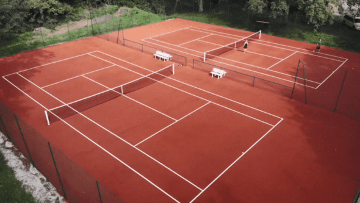
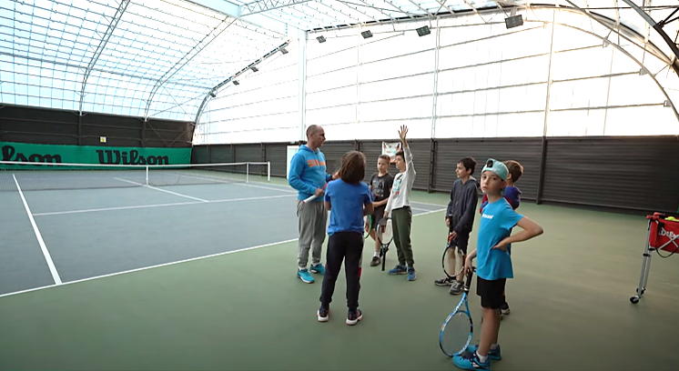
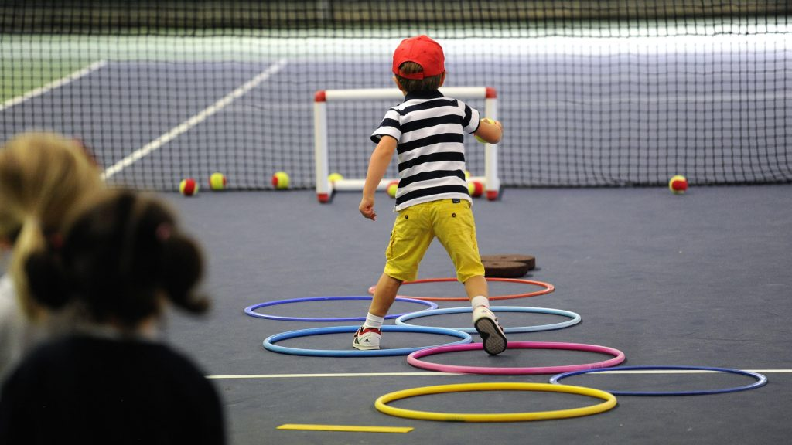

6 courts de qualité, une école de tennis dynamique et des compétitions pour tous les niveaux
Les dernières nouvelles du club
VAC Tennis est une association loi 1901 affiliée à la Fédération Française de Tennis. Basée au Gymnase Pierre de Coubertin à Verneuil-sur-Seine, notre club propose 6 courts de qualité, une école de tennis dynamique et des compétitions pour tous les niveaux.
Que vous soyez débutant, joueur de loisir ou compétiteur, le VAC Tennis vous accueille dans un cadre convivial et sportif. Rejoignez-nous pour progresser, vous entraîner et partager votre passion du tennis.

Des équipements de qualité pour tous les joueurs
4 courts extérieurs (2 en terre artificielle + 2 en béton poreux) et 2 courts couverts en résine pour jouer toute l'année, quelles que soient les conditions météo.

Le club house est attenant aux terrains couverts. Il dispose d’un bar pour partager des moments de convivialité entre joueurs et d’un salon équipé de fauteuils avec vue sur les courts vous permettant d’assister au cours de votre enfant, de regarder un match ou encore de profiter des événements sportifs diffusés sur la télévision. Le club met également à disposition des vestiaires, une douche et des toilettes.

Un terrain dédié aux plus petits (4-6 ans) avec matériel adapté : balles mousse, petites raquettes et cibles ludiques.
La réservation se fait via l'application TenUp de la FFT. Chaque adhérent peut réserver un court pour 1h, jusqu'à 7 jours à l'avance.
Réserver sur TenUpGymnase Pierre de Coubertin
Rue Jean Zay, 78480 Verneuil-sur-Seine
Téléphone : 09 67 10 48 29
Email : contact@vactennis.fr
Accédez à nos 6 courts, à l'école de tennis et aux compétitions.
À partir de 142€/an pour les adultes
Consulter les tarifs complets